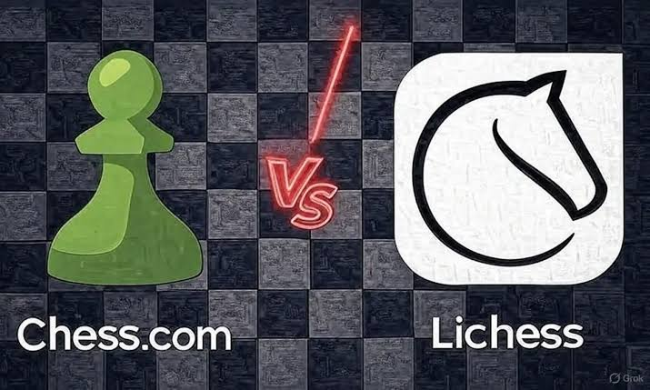

In today’s World, the first move is the hardest to make whether in a game or in real life. The one who makes it sets out on the path to becoming the present CHAMPION!
In chess, there are many openings, but you must choose the right one to gain an advantage at the start. We learn from studying theory, but by analyzing real games, we learn even more.
The ending is also very important in chess, it completes the game! After the winning move, the national anthem of the winner is played.